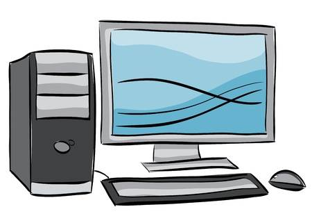

Realice mi primer servicio social del cbtis en la Torre Gubernamental, en el área de administración mis tareas eran diversas como registro de escuelas, acomodar papelería de personas de diversas escuelas. Posteriormente realicé mis prácticas finales en una papelería. Luego entré a la univeridad en donde hasta el momento he realizado mis estancias I y II las cuales consisteron en trabajar con compañeros de mecatrónica en ayudar sobre una parte de programación para implementarlo en un robot que se utilizó en el concurso de robotica que se llevó a cabo a principios del año 2019, mis estancias II consistieron en realizar un sistema para el local de la churrería en donde se controló un inventario de dicho establecimiento.
